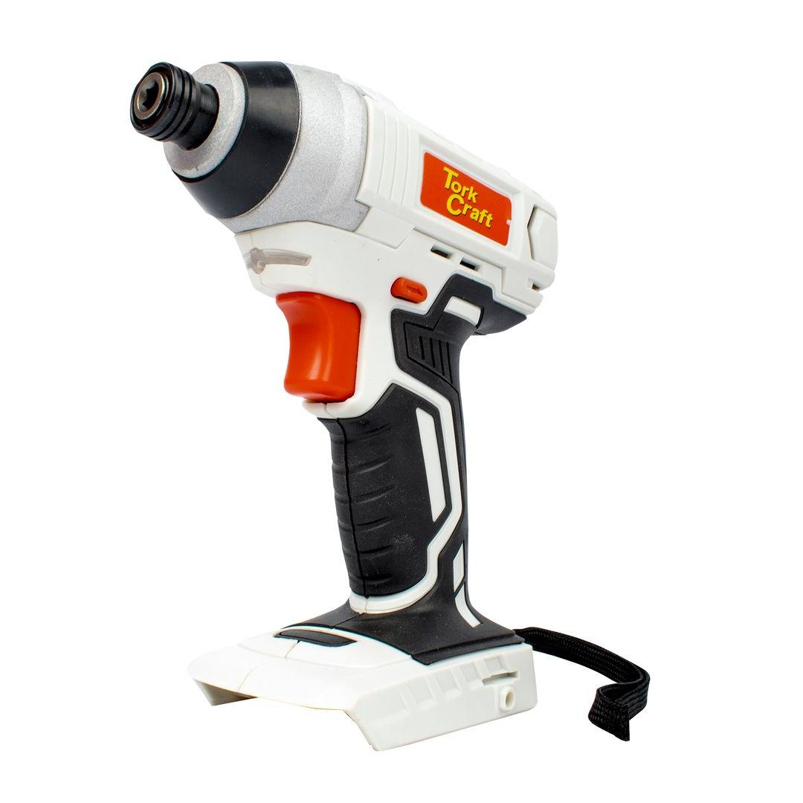
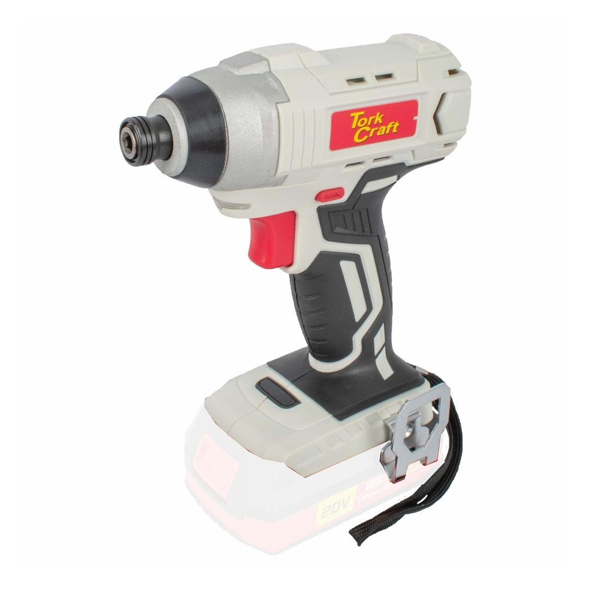
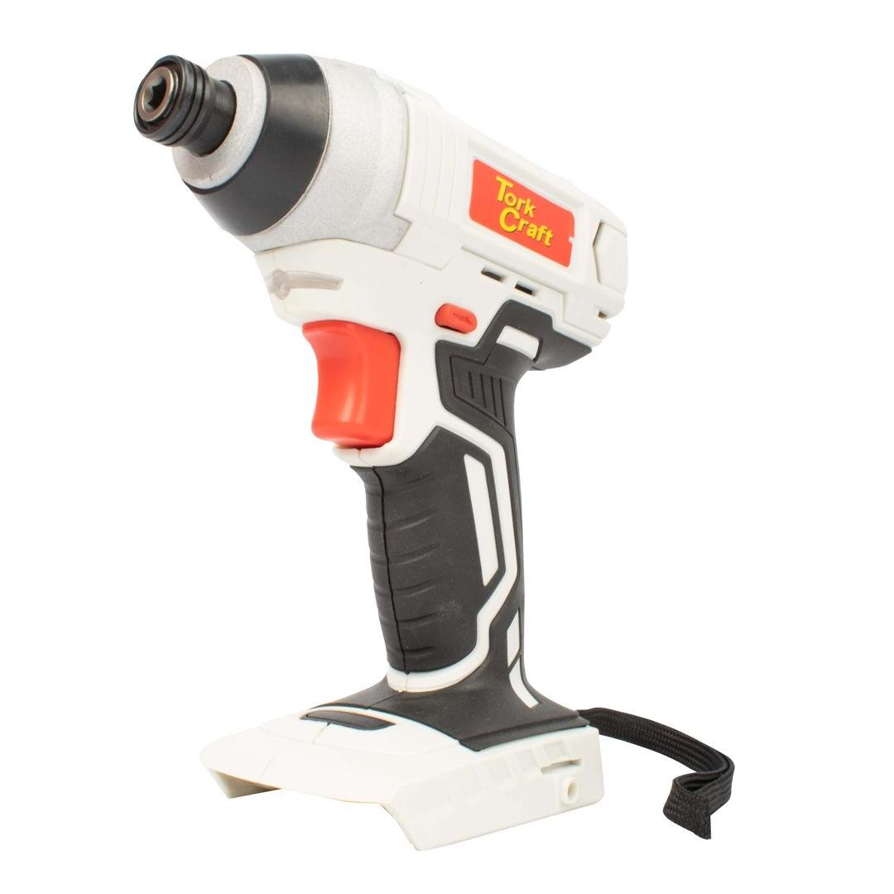
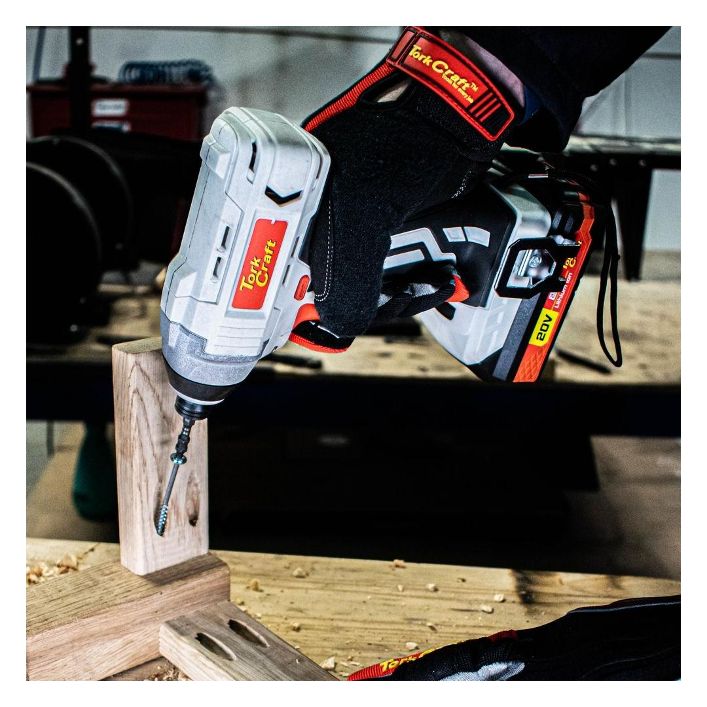
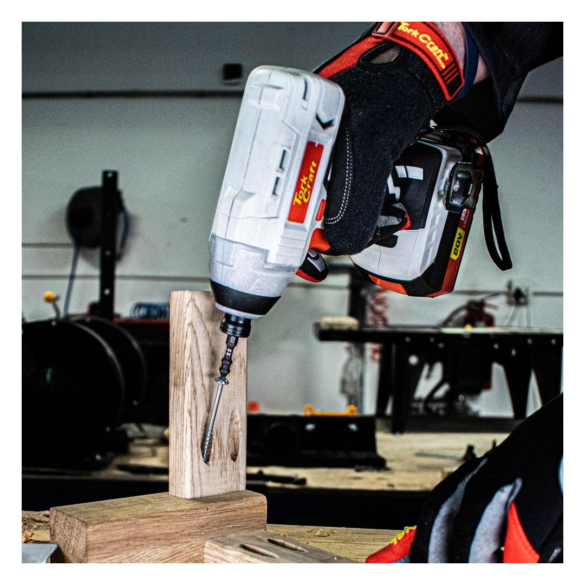

TC20090





Bursts of torque in the palm of your hand, that&s what you will experience with Tork Craft&s 20V Impact Driver. Designed to produce rotational force by means of impact makes this tool capable of driving large fasteners.
Surpassing standard drills driving performance, impact drivers can handle much bigger screwing & fastening demands with ease. Powered by Tork Craft&s 20V Lithium-Ion battery platform, with battery sizes available in 2.0Ah, 4.0Ah, 6.0Ah this ¼”(6.35mm) cordless impact driver is power in your hands.
The built-in LED worklight illuminates the work surface for greater accuracy and the direction of rotation is easily changed with a flick of a switch behind the trigger.
Tork Craft, Tools for every Job.
The machine is a bare unit and doesn&t include batteries or a charger.